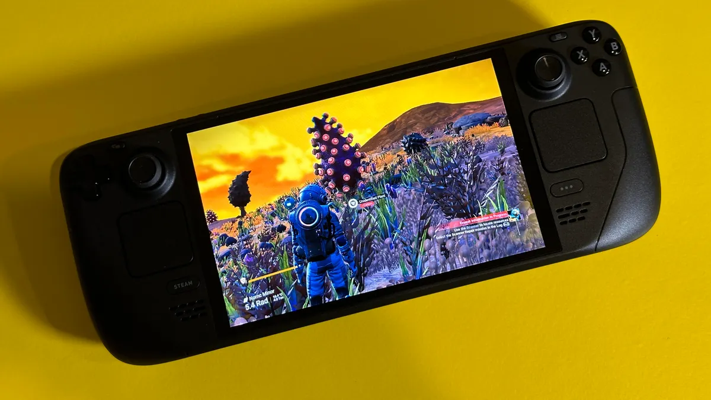

What's Different?
On the outside, the Steam Deck OLED is nearly indistinguishable from the original. The bezels have been shrunk around the screen to increase the usable area up to 7.4 inches (from 7 inches), the thumbsticks have more concave toppers for better grip, and the power button is now orange. That’s it—the big changes are all under the hood.
The screen has been upgraded to a custom HDR OLED screen capable of displaying 110% of the P3 color space, and, because of the ability of OLED panels to turn completely off at an individual pixel level, it delivers perfect black levels and effectively infinite levels of contrast. The larger 50Whr battery is 20% larger than what’s found in the original Deck. When combined with the smaller, more efficient APU, Valve estimates 30% to 50% longer battery life. The more efficient processor kicks off less heat, meaning that the Steam Deck OLED can use a much quieter fan.
The other biggest changes inside the Steam Deck OLED are the 50Whr battery and refreshed APU. The original Deck used a 40Whr battery, and Valve moved the custom processor inside from a 7nm to 6nm production node, meaning it can eke out the same performance from a smaller, more power-efficient package. Valve claims these changes, along with the more efficient screen, add up to anywhere from 30% to 50% more game time. I believe it; in games that push the Steam Deck’s APU to its maximum draw of 15 watts, the Steam Deck OLED delivers about 2 hours and 15 minutes of playtime, up from about an hour-and-a-half on the original Steam Deck. If you play indie games that sip power, the gains will be much larger. The last-generation Steam Deck sounds like a jet taking off when the SSD is stressed, but that’s been remedied. I raved about how quietly the Asus ROG Ally runs in my review, and Valve has finally matched the competition. Thanks to a larger fan and more efficient processor, the new Steam Deck runs much cooler and the fan noise is no longer audible except when you boot the device up. We couldn’t push the Steam Deck OLED past 75 degrees Celcius during game testing.

The Oled Screen
Valve isn’t the first to add an OLED screen to a PC gaming handheld (that credit goes to the discontinued Ayaneo Air Pro), but the Steam Deck OLED does boast the first handheld screen capable of HDR. Whereas the first generation of Steam Deck used an off-the-shelf IPS panel (a portrait panel rotated sideways), the new OLED screen was custom-designed and manufactured. Not only does this eliminate issues with the display rotating when Windows is installed on the device, but Valve was able to tailor the new screen’s specifications to better suit the Steam Deck’s needs. The new screen hits 90Hz, uses less power, is 200 nits brighter than the original Steam Deck’s max brightness, has blazing-fast pixel response times of 0.1 milliseconds, and can be removed and replaced without the need to disassemble the entire unit. That’s good news for tinkerers who break theirs and want to replace it on their own. A common community complaint about the original Steam Deck is that the screen is dull, and one of the most popular fixes is to download third-party tools to artificially increase the saturation at the cost of color accuracy. But the Steam Deck OLED is colorful and accurate right out of the box, and even more so once you dial in the settings. Games look uniformly great, and the difference is night and day between the two displays.